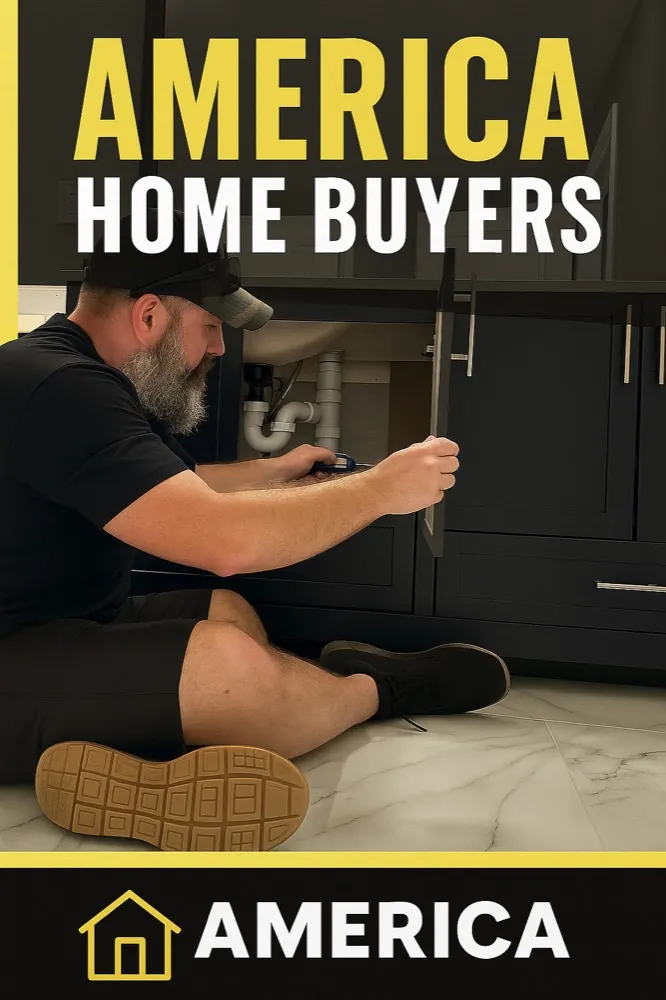

Triad-focused.
America Home Buyers focuses on Winston-Salem, Greensboro, High Point, Thomasville, Lexington, and nearby communities.
The person behind the company
America Home Buyers is a local Triad real estate investment company led by Toby Russell. When you call, you are starting a conversation with someone who works with property owners and houses here in North Carolina, not a national call center reading from a script.
Why America Home Buyers exists
A house may need extensive repairs, be full of inherited belongings, have tenant complications, or simply demand more time and money than the owner wants to invest. Toby created America Home Buyers to give those owners another option.
The goal is not to pretend a direct offer is always the highest possible price. A prepared retail listing may produce more. The goal is to provide a clear as-is number, explain what goes into it, and let you decide whether the saved time, repairs, cleanout, showings, and uncertainty are worth the tradeoff.
That means it is completely acceptable to ask questions, compare alternatives, or decide not to sell.
What you can expect
America Home Buyers focuses on Winston-Salem, Greensboro, High Point, Thomasville, Lexington, and nearby communities.
You do not need to hide repairs or clean everything before reaching out. Those realities are part of the review.
An offer is information. You can accept it, compare it with listing, or keep the property.

See the work
The project gallery shows the kinds of repair, cleanout, exterior, and interior conditions America Home Buyers evaluates. It is there so you can see that “as-is” is not just a phrase on a form.
Founded by Toby Russell. Business mailing address: 3687 Old Highway 29, Thomasville, NC 27360.
(336) 701-2230 · nchomebuying@gmail.com. Contact Toby to arrange a property review.